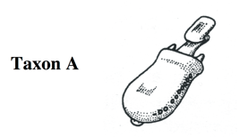
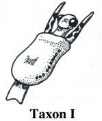
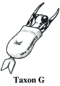
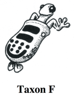
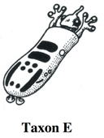
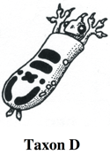
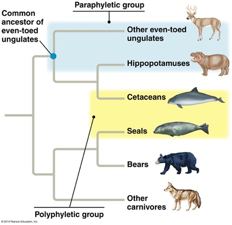

Explore evolutionary relationships, build trees, and follow the evidence.
START HERE · PLAY WITH A TREE
Where did each characteristic arise?
A characteristic that appears on a branch is inherited by its descendants. Use the evidence below to place five characteristics on this simplified vertebrate tree. Assume each arose once, with no losses or independent gains.
Drag a characteristic from the bank to a position A–E. Or click or tap a characteristic, then a position. With a keyboard, Tab to a characteristic and press Enter or Space, then Tab to a position and activate it. Feedback explains what your placement predicts. You can move traits again, return them to the bank, or reset.
Lancelet is the outgroup and lacks all five characteristics in this teaching dataset. Translate these observations into changes on branches.
0 of 5 traits correctly placed.
Select or drag a characteristic to begin. Each position can hold one characteristic.
Empty
Empty
Empty
Empty
Empty
Explore the branches as text
Position A: a gain here is inherited by Lamprey, Bass, Frog, Turtle, Leopard.
Position B: a gain here is inherited by Bass, Frog, Turtle, Leopard.
Position C: a gain here is inherited by Frog, Turtle, Leopard.
Position D: a gain here is inherited by Turtle, Leopard.
Position E: a gain here is inherited by Leopard.
Follow the branching connections, not the spacing of names. Colored borders are accompanied by written status labels.
This is ungraded exploration. Placements last only while this page is open and are not saved or submitted. Record written lab answers in your separate document.
YOUR FIELD GUIDE
From traits to evolutionary relationships
By the end of this lab, you will interpret cladograms, distinguish ancestral and derived character states, use an outgroup, construct a character matrix and a tree, and evaluate monophyletic, paraphyletic, and polyphyletic groups. You will use homology, homoplasy, and parsimony to explain your hypotheses.
How to work
Open a separate answer document before you begin. Label your responses by part and question number, and create your matrices and tree drawings there. Work through the four parts in order.
Type all answers outside this lab. Begin with the movable-characteristic practice tree, then follow the instructions, diagrams, and expandable explanations. Written responses stay in your separate document; practice placements are temporary and are not saved or submitted.
These course files may require your WSU Canvas login. This online version adapts the worksheet activities; follow your instructor’s submission requirements.
Before you begin
Speciation occurs when populations become reproductively isolated and diverge. Descendants inherit traits from ancestors, but traits can also change or be lost. A phylogenetic tree is a testable hypothesis about those relationships, not a ladder of progress.
Open the essential vocabulary
Taxon (plural: taxa)
A named group of organisms, such as a species or genus.
Node
A branching point representing a common ancestral lineage.
Clade
An ancestor and all of its descendants. A branch can lead to a clade; a single branch alone is not the definition of a clade.
Sister groups
Two lineages that share an immediate common ancestor with each other.
Ancestral and derived states
Earlier and later states of a character relative to a particular comparison. A derived state for one group can be ancestral within a smaller group.
Outgroup
A related taxon outside the ingroup, used to help root the tree and infer ancestral states. It is not the living ancestor of the ingroup.
Homology
Similarity inherited from a common ancestor.
Homoplasy
Similarity arising through independent evolution or evolutionary reversal. Bird and bat wings as flight structures are a useful example; their underlying forelimb bones are homologous.
Parsimony
Comparing hypotheses by the number of character-state changes they require; fewer changes are preferred under this criterion, although this does not prove a tree is correct.
PART 01 · INTERPRET
Read the branches, not the tip order
Trace two taxa back to their most recent shared node to compare relatedness. Rotating branches around a node changes the drawing, but not the relationships. Branch lengths in these cladograms do not measure time or amount of change.
Simplified teaching tree adapted from the worksheet. Tick marks show inferred character changes. The topology is (Lancelet,(Lamprey,(Bass,(Frog,(Turtle,Leopard))))).Read the tree as text
The lancelet branches outside all five vertebrates. Lamprey branches outside bass, frog, turtle, and leopard. Bass branches outside frog, turtle, and leopard. Frog branches outside turtle and leopard; turtle and leopard share the most recent node shown. Vertebral column: all except lancelet. Hinged jaws: bass, frog, turtle, leopard. Four walking legs: frog, turtle, leopard. Amnion: turtle and leopard. Hair: leopard.
In this simplified dataset the lancelet has state 0 for each character: no vertebral column, no hinged jaws, no four walking legs, no amnion, and no hair. Absence is not always ancestral in other datasets.
1. Which taxon is the outgroup?
Consider: Lancelet / Lamprey / Leopard.
Record your answer and reasoning in your separate document.
Explore the explanation after you respond
Lancelet. The lancelet branches outside the vertebrate ingroup. It helps polarize the character states.
2. On the root-to-lancelet path, do any of the five mapped derived traits arise?
Consider: Yes / No.
Record your answer and reasoning in your separate document.
Explore the explanation after you respond
No. None of the five changes is mapped on that path in this simplified tree.
3. Does a vertebral column arise along the root-to-bass path?
Consider: Yes / No.
Record your answer and reasoning in your separate document.
Explore the explanation after you respond
Yes. The bass lineage passes through the vertebral-column change.
4. Does an amnion arise along the root-to-frog path?
Consider: Yes / No.
Record your answer and reasoning in your separate document.
Explore the explanation after you respond
No. The frog branches before the amnion change in this tree.
5. How should lamprey be scored for four walking legs?
Consider: 0: absent / 1: present.
Record your answer and reasoning in your separate document.
Explore the explanation after you respond
0: absent. Lamprey retains state 0 for this character in the worksheet dataset.
6. Which taxon is sister to leopard in this tree?
Consider: Frog / Turtle / Bass.
Record your answer and reasoning in your separate document.
Explore the explanation after you respond
Turtle. Turtle and leopard share the most recent branching node shown. Tip position alone does not determine relatedness.
Make the character matrix
For this simplified tree, score each taxon: 0 = ancestral state (trait absent); 1 = derived state (trait present). Recreate the matrix below in your separate answer document and score all 30 cells. The dashes here mark cells to complete externally.
Vertebrate character matrix — recreate and complete in your separate answer document
Taxon
Vertebral column
Hinged jaws
Four walking legs
Amnion
Hair
Lancelet
—
—
—
—
—
Lamprey
—
—
—
—
—
Bass
—
—
—
—
—
Frog
—
—
—
—
—
Turtle
—
—
—
—
—
Leopard
—
—
—
—
—
Explore how to check your matrix
Trace each taxon from the root to its tip. Score 1 only if the path passes a mapped gain of the character. For example, bass has a vertebral column and hinged jaws but lacks the other three mapped traits in this dataset.
Explain your inference
In your separate document, explain how the outgroup helps you infer which states are ancestral.
PART 02 · INVESTIGATE
Try the NOVA Evolution Lab
The worksheet asks you to complete Missions 1 and 2. Open the activity, use guest access if available, and inspect traits with the magnifying glass. The original worksheet describes filled circles and a sidebar question as signs of a completed tree; the external interface may change.
Capture evidence of both missions and upload it with your response file in Canvas. This lab does not upload or store screenshots.
Record externally
Record completion evidence or screenshot file names for Missions 1 and 2.
Describe one tree you revised. Which trait changed your hypothesis?
If NOVA is unavailable or inaccessible
Contact your instructor to agree on equivalent evidence. The guided activities here support tree interpretation and character-matrix practice, but do not certify NOVA mission completion. Describe the barrier and the work you completed in your separate answer document; do not record a mission as complete unless you completed it.
PART 03 · CONSTRUCT
Meet the Caminalcules
These fictional organisms let you reason from visible evidence. Taxon A is the outgroup. Observe all six before choosing characters. There is no automatic answer key for your character definitions or final tree: defend them with evidence.

Taxon A · Outgroup

Taxon I

Taxon G

Taxon F

Taxon E

Taxon D
Text observation guide for the specimens
Use these descriptions alongside the images. They describe visible features, not a predetermined evolutionary order. If a feature is ambiguous, record uncertainty rather than inventing a state.
A: elongated oval body, one narrow stalk ending in a rectangular tip, small side protrusion, short dark curved body mark, dotted body edge; no visible rear flippers.
I: oval body with long pointed projections around a central head, dark head spots, short curved body mark, dotted body edge, broad divided rear appendage.
G: similar pointed head projections and central spotted head, short curved body mark, dotted body edge, two narrow pointed rear appendages.
F: elongated body with two large dark bars and several small round body spots, a round-tipped stalk and branching head appendage, dotted edge, small lobed rear appendages.
E: elongated body with two large dark bars and small round body spots, branching appendages on both sides of the head, dotted edge, small lobed rear appendages.
D: elongated body with two large dark bars and several irregular dark body patches, branching appendages on both sides of the head, dotted edge, small lobed rear appendages.
1. Define observable characters
Choose up to eight binary characters; use as many as you need. Define both states precisely. Example: “rear appendages: 0 = absent, 1 = present.” Do not equate 0 with ancestral until you have compared the outgroup. Avoid counting the same feature twice.
In your separate document, number your characters and list each character name, its state 0 definition, and its state 1 definition.
2. Score your specimens
Recreate this matrix in your separate document. Score 0 or 1 using your definitions, or “?” for unknown or uncertain. Columns correspond to your numbered characters; omit unused columns.
Caminalcule character matrix — recreate and complete in your separate answer document
Taxon
Character 1
Character 2
Character 3
Character 4
Character 5
Character 6
Character 7
Character 8
A
—
—
—
—
—
—
—
—
I
—
—
—
—
—
—
—
—
G
—
—
—
—
—
—
—
—
F
—
—
—
—
—
—
—
—
E
—
—
—
—
—
—
—
—
D
—
—
—
—
—
—
—
—
TA check-in
Discuss your character definitions and scores with your TA before building the tree. Record feedback and revisions in your separate document.
3. Build a branching hypothesis externally
In your answer document, drawing tool, or on paper, start with the six taxa. Keep A separate as the outgroup.
Use your matrix to identify a pair supported as sister taxa. Connect them at a node.
Compare the remaining taxa and clades. Join two lineages at each node; revise your hypothesis as needed.
Join A to the ingroup at the root. Label every taxon and node.
Add tick marks and labels for character-state changes on internal and terminal branches. Identify each branch by its descendant taxa.
Explore how tree notation works
In the example (Outgroup,((P,Q),R)), P and Q are sisters. Their clade is sister to R, and the outgroup branches outside all three. These placeholder taxa demonstrate notation; they do not prescribe a Caminalcule answer.
4. Test and explain your hypothesis
Count the character-state changes required by your tree. Compare a competing topology using the same character scores and the parsimony criterion.
Identify any convergence or reversal, or explain why none is required. Explain how unknown scores limit your conclusions.
Predict a trait combination for a newly discovered Caminalcule that would support placement in one of your clades. What evidence could challenge your tree?
Include the labeled tree, character mapping, comparison, and prediction in your separate answer document.
PART 04 · CLASSIFY
Which groups tell an evolutionary story?
Monophyletic: an ancestor and all descendants. Paraphyletic: an ancestor and some, but not all, descendants. Polyphyletic: a grouping assembled from separate lineages that excludes their most recent common ancestor as a member. All organisms ultimately share ancestry; polyphyletic does not mean “no common ancestor.”

Worksheet mammal example. Read the descriptions below for the relationships and grouping boundaries.
The tree separates an ungulate lineage from a carnivore lineage. Within the ungulate lineage, other even-toed ungulates are sister to hippopotamuses plus cetaceans. Within carnivores, seals are sister to bears plus other carnivores. All three ungulate tips plus their ancestor form a clade. Excluding cetaceans from that group makes it paraphyletic. Grouping cetaceans with seals for aquatic adaptations makes a polyphyletic group.
1. Other even-toed ungulates + hippopotamuses + cetaceans, including their ancestor:
Record your answer and reasoning in your separate document.
Explore the explanation after you respond
Polyphyletic. This grouping combines separate lineages using homoplastic features and excludes their most recent common ancestor as a group member.
4. Hair inherited by humans and dogs from their common ancestor is:
Consider: Homology / Homoplasy.
Record your answer and reasoning in your separate document.
Explore the explanation after you respond
Homology. Their hair is similar because of inheritance from a shared ancestor.
5. A lineage loses a derived feature and returns to an earlier state. This is:
Consider: A reversal, a form of homoplasy / Proof it is the outgroup.
Record your answer and reasoning in your separate document.
Explore the explanation after you respond
A reversal, a form of homoplasy. An ancestral-looking state can arise through reversal. Outgroup status depends on relationships, not appearance alone.
Record externally
List the taxonomic ranks from most to least inclusive, starting with Domain and Kingdom.
Explain why modern classifications aim to recognize monophyletic groups.
Review the rank order after you respond
Domain → Kingdom → Phylum → Class → Order → Family → Genus → Species.
EXIT QUESTIONS · APPLY
Use evidence to explain your tree
Write these responses in your separate document for instructor review. There is no answer reveal for these questions. This is a redrawn version of the worksheet’s A–G topology with explicit node and trait labels for the online questions.
Topology: (A,((B,C),(((D,E),F),G))). Trait 1 occurs between nodes 2 and 4; trait 2 between nodes 5 and 6. Assume no losses or independent gains of these traits.Node relationships in text
Node 1: A and the lineage containing B–G.
Node 2: the B–C lineage and the D–G lineage.
Node 3: B and C.
Node 4: G and the D–E–F lineage.
Node 5: F and the D–E lineage.
Node 6: D and E.
Which node is the most recent common ancestor of B and C?
Which node is the most recent common ancestor of A and B?
Which species is the outgroup? Explain how you know.
List all species that inherit trait 1.
List all species that inherit trait 2.
Which species is/are most closely related to E? Explain using the node relationships.
Which species is/are most closely related to F? Explain why tip spacing does not determine the answer.
Define a monophyletic group on this tree. List every taxon and labeled node included, and explain its boundary.
Define a paraphyletic group on this tree. List its taxa and included nodes, and identify the excluded descendant lineage(s).
Propose a polyphyletic grouping on this tree. List its taxa and any included nodes, identify the excluded common ancestral node, and explain your reasoning.
FINISH · SUBMIT YOUR EVIDENCE
Bring your reasoning to Canvas
Review your separate answer document. Include labeled responses for each part, both character matrices, your Caminalcule tree with mapped changes, your parsimony comparison and prediction, and all exit responses.
Save that document and submit it through your Canvas assignment with NOVA Missions 1 and 2 evidence and any additional materials your instructor requests. Follow your instructor’s file-format and submission requirements.
This lab page contains no response fields and does not collect, store, or submit student answers.